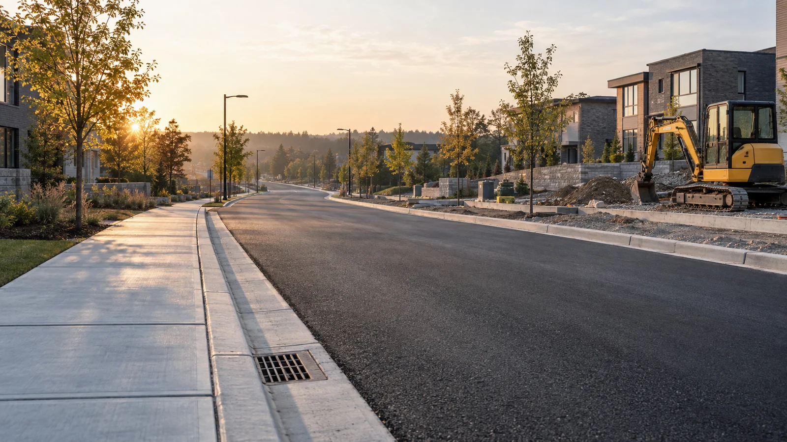

Engineering-led construction for Ontario's most important projects.
From missing middle housing to municipal infrastructure, SJ Engineering & Constructions delivers design-build solutions across York Region, South Simcoe, and the northern GTA.
Engineering insight meets practical construction.
SJ brings together transportation knowledge, engineering experience and construction delivery to help clients move projects from planning into implementation.
Road Safety & Transportation
Traffic calming, road safety audits, temporary traffic control, and pavement works — delivered by a team with direct transportation engineering experience.
Explore services →Civil Construction
Concrete, curbs, sidewalks, site grading, and minor civil works. We bring engineering oversight to every civil scope, not just supervision.
Explore services →Design-Build & General Contracting
One team. One contract. No coordination gap between designer and builder. Our P.Eng. leadership means engineering decisions happen in-house.
Explore delivery →Steel Structure
Steel building erection and construction coordination backed by practical steel structure experience.
Explore steel structures →Missing Middle Housing
Up to 4 units on eligible residential lots, subject to local zoning and servicing. SJ coordinates the full process — feasibility, permits, civil works, and construction.
Explore housing →A specialized partner for your next project.
SJ works alongside general contractors, developers, consultants and construction teams to deliver specialized transportation and civil components of larger projects. We focus on coordination, schedule awareness, documentation and responsive delivery.
Partner With SJ- Prime Contractors
Specialized transportation and civil scopes. - Developers
Site, access, traffic and construction coordination. - Municipal Projects
Road-safety and small infrastructure implementation. - Consulting Teams
Field implementation and contractor support.
Built on engineering and transportation experience.
Our principals each bring approximately five years of experience in transportation planning, traffic engineering and construction-related transportation assignments.

Jithu Mohan
Jithu founded SJ Engineering & Constructions to bridge the gap between engineering planning and on-the-ground construction delivery. With a background in mechanical engineering and transportation project coordination, he oversees client relationships, project planning, and the day-to-day execution that determines whether a project succeeds or fails. He also brings practical experience in steel structure construction and steel building erection. His approach: solve problems before they become delays.

Sreelakshmi
Sreelakshmi is SJ's Principal Engineer and the technical foundation of every project the firm undertakes. As a licensed P.Eng. with a Master's degree in Civil Engineering, she brings formal engineering accountability to structural decisions, site design, transportation planning, and regulatory compliance. Her experience includes transportation impact studies, construction-phase traffic management plans, and road safety reviews — expertise that is directly transferable to the civil and infrastructure scopes SJ pursues.
Have a project in mind?
Whether you need a specialized subcontractor, civil-construction partner or help coordinating a design-build project, talk to SJ about what you're planning.